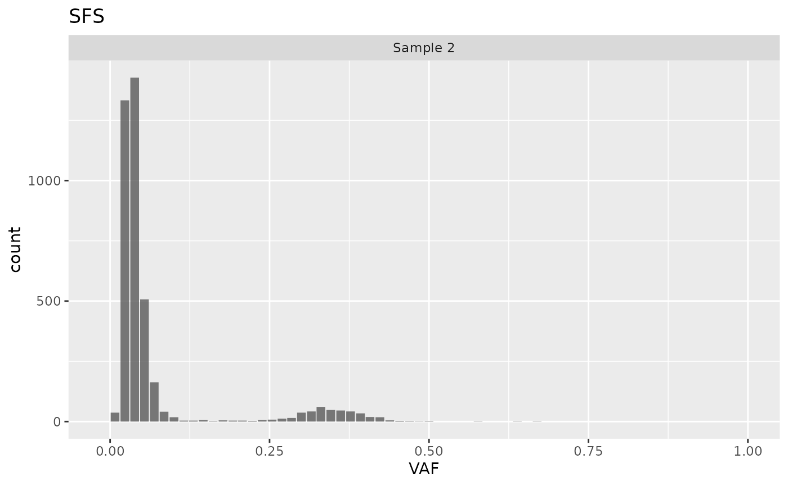

Filter or split cevodata
filter_split.RmdTransformations
library(cevodata)
#>
#> Attaching package: 'cevodata'
#> The following object is masked from 'package:stats':
#>
#> filter3 cevodata transforming functions have been implemented:
filter()
filter() can be used to subset the cevodata using any
metadata columns in a tidyverse manner
test_data |>
filter(sex == "female")
#> <cevodata> dataset: test_data
#> SNV assays: snvs (default)
#> CNA assays: cnas (default)
#> 1 cases, 1 samples, 1 sample per case
#> NA
#> Active models:split_by()
split_by() to split cevodata by any metadata column
splits <- test_data |>
split_by(sex)
splits
#> <cevo_splits> object
#> Splits: male, female
splits$male
#> <cevodata> dataset: test_data
#> SNV assays: snvs (default)
#> CNA assays: cnas (default)
#> 3 cases, 3 samples, 1 sample per case
#> 12000 mutations total, 4000 +/- 0 mutations per case
#> Active models:merge()
merge() to merge 2 objects into one
merge(splits$male, splits$female)
#> <cevodata> dataset: Merged datasets
#> SNV assays: snvs (default)
#> CNA assays: cnas (default)
#> 4 cases, 4 samples, 1 sample per case
#> 16000 mutations total, 4000 +/- 0 mutations per case
#> Active models:Transforming functions are helpful in investigating particular samples, for example, when one wants to see the VAF spectrum of one sample only quickly:
test_data |>
filter(sample_id == "Sample 2") |>
plot_SFS()
#> Warning in geom_bar(join_aes(bar_mapping, mapping), stat = "identity", alpha =
#> alpha, : Ignoring unknown aesthetics: width